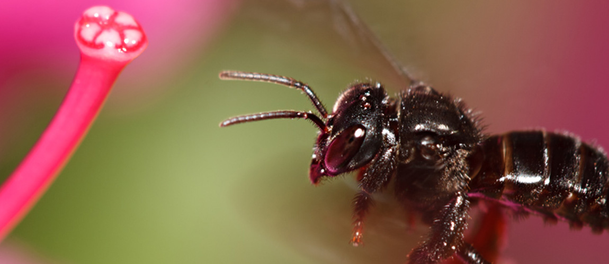
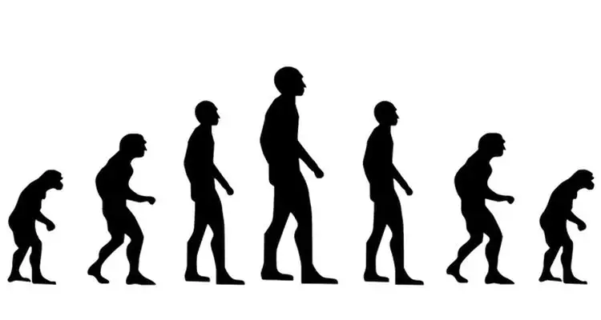
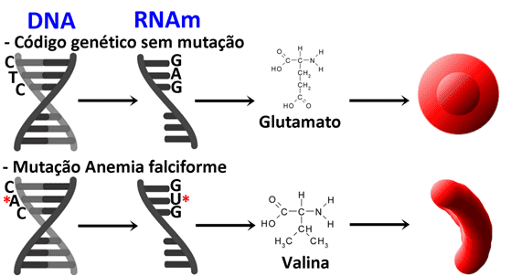
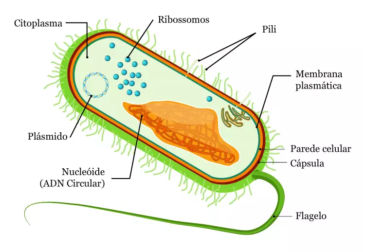
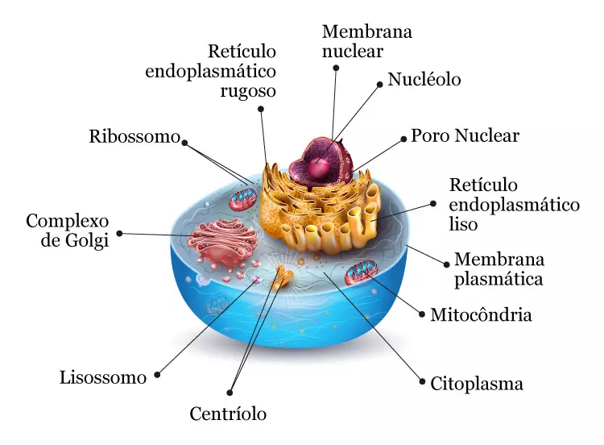
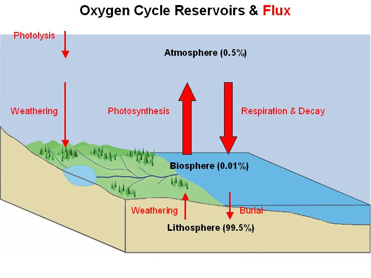
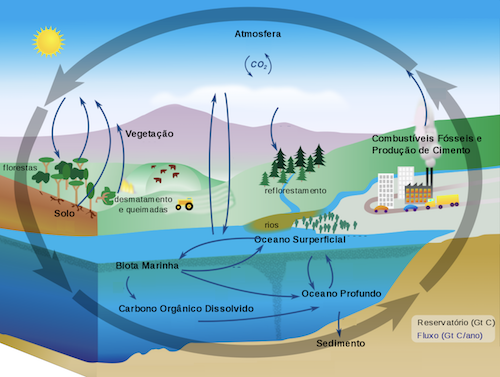
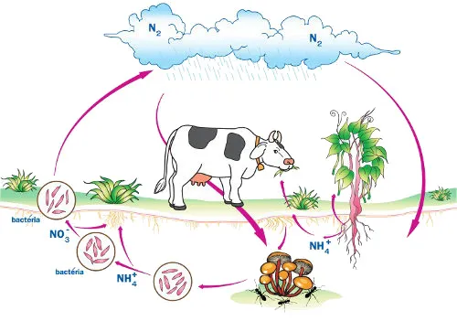

Ecologia e Sustentabilidade, bem como problemas ambientais
De acordo com o edital do ENEM deste ano, a prova de Ecologia e Ciências Ambientais dará ênfase aos temas da sustentabilidade: a conservação do meio ambiente e as consequências do uso abusivo dos recursos ambientais disponíveis. Conhecer as principais políticas ambientais de conservação e os ambientes que elas visam proteger também é fundamental.
Ecologia: Conceitos Básicos
-O que é Biodiversidade?
Biodiversidade ou diversidade biológica é o grau de variação de vida. O termo pode ser entendido de várias formas, já que descreve ao mesmo tempo a variedade e a riqueza de todas as espécies (diversidade de espécies), a variedade dos genes contidos dentro de cada indivíduo de tais espécies (diversidade genética) e também a variedade de ecossistemas dentro de uma área, bioma ou do próprio planeta (diversidade de ecossistemas).
-O que é desenvolvimento sustentável?
Entenda este conceito de desenvolvimento que procura atender as necessidades do presente, sem comprometer o futuro. “O desenvolvimento que procura satisfazer as necessidades da geração atual, sem comprometer a capacidade das gerações futuras de satisfazerem as suas próprias necessidades”
-O que é um Ecossistema e um Bioma?
Apesar de se confundirem (e se complementarem), esses conceitos fundamentais de ecologia são distintos.
O Ecossistema é um conjunto formado pelas interações entre componentes bióticos, como os organismos vivos: plantas, animais e micróbios, e os componentes abióticos, elementos químicos e físicos, como o ar, a água, o solo e minerais.
Bioma é o “conjunto de vida (vegetal e animal) definida pelo agrupamento de tipos de vegetação contíguos e identificáveis em escala regional, com condições geoclimáticas similares e história compartilhada de mudanças, resultando em uma diversidade biológica própria”. Em outras palavras, ele pode ser definido como uma grande área de vida formada por um complexo de ecossistemas com características homogêneas.
Muitas vezes, o termo “bioma” é utilizado como sinônimo de “ecossistema” mas, diferente do ecossistema, à classificação de bioma interessa mais o meio físico (a fisionomia da área, principalmente da vegetação) que as interações que nele ocorrem. O perfil do local e a dimensão também importam na classificação: um ecossistema qualquer só será considerado um bioma se suas dimensões forem de grande escala. Por exemplo, existe o bioma da Mata Atlântica e, dentro dele, ecossistemas como a floresta ombrófila densa, a mata de araucária, os campos de altitude, a restinga e os manguezais.
-O que é uma Espécie e um Espécime?
Em um sentido mais amplo, espécime é qualquer exemplar ou amostra de material ou ser vivo. Em geologia, uma pedra pode ser um espécime, uma amostra de rocha metamórfica. No sentido biológico, um espécime se refere a um único animal, planta ou micro-organismo usado como representativo da espécie que pertence para o estudo das propriedades de uma população. Um único cachorro doméstico, por exemplo, é um espécime do gênero Canis, que abrange todas as espécies de cães do mundo.
Espécie é um pouco mais complicado. Ela é a unidade taxonômica básica do sistema de classificação dos seres vivos utilizado atualmente. Embora seja um conceito fundamental à Biologia, há várias definições que discordam no tocante à abrangência do termo, isto é, o que é e o que não é uma espécie. O conceito mais comum é o biológico, que designa espécie como grupo de indivíduos com características comuns (morfologicamente semelhantes) que podem ou tem o potencial de produzir prole fértil (capacidade de reproduzir) ao cruzar entre si e não são capazes de cruzar com outros grupos, ou seja, estão reprodutivamente isolado dos demais.
O que são Serviços Ambientais?
Trata-se dos benefícios que as pessoas obtêm da natureza direta ou indiretamente, através dos ecossistemas, a fim de sustentar a vida no planeta.

Os ecossistemas proveem a purificação da água e do ar, amenizam os fenômenos climáticos violentos (como ciclones, tornados e tufões) e protegem contra desastres naturais (por exemplo, tsunamis e deslizamentos de terra); decompõem o lixo, mantêm os solos férteis e ajudam no controle de erosões. Animais, como as abelhas, vespas e formigas, polinizam as plantas que, enquanto crescem, sequestram carbono da atmosfera. Outros, como a cotia e o mico-leão-dourado, ajudam as florestas e matas dispersando sementes.
As fezes animais fertilizam o solo. Por sua vez, as florestas fornecem madeira, alimentos, substâncias medicinais, fibras e produzem recursos genéticosqualquer material de origem vegetal, animal ou microbiana que contenha unidades funcionais de genes e apresentem valor econômico real ou potencial).
Os sistemas fluviais disponibilizam água doce, o mais essencial dos recursos, movem hidrelétricas para produzir energia, quando navegáveis substituem estradas e são usados como áreas de lazer. As zonas úmidas costeiras filtram os resíduos, mitigam as cheias e servem de viveiro para a fauna marinha, o que permite a pesca comercial. Todos estes são exemplos de serviços ambientais.
O que é um Aquífero?
É toda formação geológica subterrânea capaz de armazenar água e que possua permeabilidade suficiente para permitir que esta se movimente. São verdadeiros reservatórios subterrâneos de água formados por rochas com características porosas e permeáveis que retém a água das chuvas, que se infiltra pelo solo, e a transmitem, sob a ação de um diferencial de pressão hidrostática, para que, aos poucos, abasteça rios e poços artesianos.
São através dos aquíferos que os cursos de águas superficiais (rios, lagos, nascentes, fontes, pântanos e afins) são mantidos estáveis e o excesso de água é evitado através da absorção da água da chuva.
Biomas brasileiros
Amazônia - Com mais de 4 milhões de Km², este é o maior bioma do país. Um frágil gigante que guarda a maior diversidade biológica do planeta.A Amazônia compreende um conjunto de ecossistemas que envolve a bacia hidrográfica do Rio Amazonas, bem como a Floresta Amazônica; é considerada a região de maior biodiversidade do planeta e o maior bioma do Brasil. Não é exclusivamente brasileira, sendo, portanto, encontrada em outros países.
Pantanal - É um bioma que abrange quase 2% do território brasileiro, com uma área total de cerca de 250 mil km². É conhecido por ser a maior área inundável do planeta e ocupa parte dos estados do Mato Grosso e Mato Grosso do Sul, além de parte dos territórios da Bolívia e do Paraguai.
O Pantanal apresenta grande integração de outros biomas, podendo ter áreas de ocorrência com o Cerrado, a Caatinga, e florestas tropicais. Entretanto, a principal característica desse bioma é sua planície inundada, sua marca registrada no Brasil.
Mata Atlântica - É um bioma rico em biodiversidade e também ameaçado pelo ser humano. Apresenta grande variedade de espécies animais e vegetais, sendo algumas dessas endêmicas. A Mata Atlântica destaca-se por sua grande biodiversidade e por suas espécies endêmicas, como o mico-leão-dourado.
Pampa - É uma região de clima temperado, com temperaturas médias de 18°C, formada por coxilhas onde se situam os campos de produção pecuária e as várzeas que se caracterizam por áreas baixas e úmidas. A região sul tem, na pecuária, uma tradição que se iniciou com a colonização do Brasil.
A Caatinga - É um bioma exclusivamente brasileiro e compreende cerca de 11% do território nacional e 70% da Região Nordeste. Apresenta uma grande biodiversidade. A Caatinga concentra-se na Região Nordeste do país, cujo clima é semiárido. Sua vegetação apresenta características adaptadas à escassez de chuva.
O Cerrado - É considerado o segundo maior bioma da América do Sul e o segundo maior bioma do Brasil. É conhecido como savana brasileira e possui uma grande biodiversidade. Sua vegetação possui características predominantes, como árvores de tronco grosso e tortuoso, além de gramíneas e arbustos.
Problemas ambientais
São os problemas ambientais existentes no planeta. Problemas como poluição atmosférica, poluição das águas, queimadas e desmatamentos são cada vez mais frequentes e afetam a qualidade de vida do homem e também de outras espécies.
Efeito estufa
Efeito estufa é um fenômeno atmosférico natural responsável pela manutenção da vida na Terra. Sem a presença desse fenômeno, a temperatura na Terra seria muito baixa, em torno de -18ºC, o que impossibilitaria o desenvolvimento de seres vivos.
Existem, na atmosfera, diversos gases de efeito estufa capazes de absorver a radiação solar irradiada pela superfície terrestre, impedindo que todo o calor retorne ao espaço. Parte da energia emitida pelo Sol à Terra é refletida para o espaço, outra parte é absorvida pela superfície terrestre e pelos oceanos. Uma parcela do calor irradiado de volta ao espaço é retida pelos gases de efeito estufa, presentes na atmosfera.
Dessa forma, o equilíbrio energético é mantido, fazendo com que não haja grandes amplitudes térmicas e as temperaturas fiquem estáveis.
Existem quatros principais de gases de efeito estufa:
-Dióxido de carbono;
-Gás metano;
-Óxido nitroso;
-Gases fluoretados.
Fragmentação
A fragmentação se refere às alterações em um habitat original, terrestre ou aquático. Trata-se de um processo no qual um habitat contínuo é dividido em manchas, ou fragmentos, mais ou menos isolados.
Fragmentos florestais - Os mais notórios são áreas de vegetações naturais interrompidas por barreiras antrópicas (criadas por ação humana) ou naturais, capazes de diminuir significativamente o fluxo de animais, pólen ou sementes. A divisão em partes de uma área antes contínua faz com estas partes adquiram condições ambientais diferentes.
Fragmentação Natural - A fragmentação pode ser produzida por vários processos naturais, que muito se distinguem daqueles resultantes da ação humana. Ambientes isolados naturalmente podem conter espécies endêmicas devido ao longo tempo de isolamento, o que os torna prioritários para conservação.
Além disso, estes fragmentos naturais podem ser utilizados como modelo para estudar os efeitos de longo prazo da fragmentação causadas pelo homem.
Fragmentação Antrópica - Ao lado dos fatores naturais, está a interferência humana. A identificação do quanto interferem no processo de fragmentação ambiental é um desafio em razão da falta de dados, resultado da pouca prática do monitoramento permanente de habitats.
Consequências
Este processo cria habitats precários para espécies na área fragmentada. Quanto menos áreas naturais, menores são os espaços para as espécies viverem e se reproduzirem. Isso provoca uma redução no número de plantas, animais e microrganismos que conseguem viver naquele lugar.
Outras consequências possíveis da fragmentação de florestas são: redução do tamanho da população; inibição ou redução da migração; imigração de espécies exóticas para as áreas desmatadas circundantes e para o fragmento.
Evolução
Ciclo de surgimento e continuidade de variadas espécies
Evolução é o processo de mudança e adaptação dos seres vivos às modificações ocorridas no meio ambiente com passar do tempo.
A ideia de evolução como recurso biológico começou a ser discutida no século XVIII, pois até então acreditava-se na teoria do criacionismo. Esta dizia que um ser divino tinha criado todas as espécies e as manteve imutáveis.
Entretanto, na segunda metade do século XIX, entrou em cena a teoria de que todos os organismos dividem o mesmo ancestral no mundo, sendo o ciclo evolutivo uma junção de transformações lentas rumo às novas variedades de espécies.
Teorias Evolucionistas
O biólogo francês Jean-Baptiste Lamarck formulou uma das primeiras teorias sobre a evolução dos seres vivos. Para explicar, sugeriu duas leis: a Lei do Uso e Desuso e a Lei da Transmissão dos Caracteres Adquiridos.
A Lei do Uso e Desuso pontua que quando uma espécie utiliza determinada parte do corpo com maior intensidade, essa parte se desenvolve ainda mais que as outras. Já as partes que não são tão usadas podem sofrer atrofiamentos e até desaparecer.
A segunda lei, Transmissão dos Caracteres Adquiridos, afirma que certas características são transmitidas para as novas gerações com o passar dos anos.
Apesar do pioneirismo, essas leis apresentam falhas. No caso do uso e desuso, não pode ser deixado de lado o fato de que as características dos organismos são definidas pelos genes, não necessariamente pelo uso contínuo e intenso. O outro erro inclui a segunda lei, já que certas características não podem ser transmitidas, pois não estão inseridas na formação genética.
Darwinismo
Criada pelos naturalistas Charles Darwin e Alfred Russel Wallace, essa ideia evolucionista acredita que as espécies vivem em constante luta pela adaptação, sobrevivendo apenas os mais fortes e capazes de se reproduzir.
Apesar do conceito de seleção natural ser aceito e estudado pela biologia, não consegue explicar quais os atributos deixam determinadas espécies mais fortes e adaptáveis, e como são transmitidas para os descendentes. Essa explicação apenas surge com os estudos sobre genética.
 Ciclo da evolução humana.
Neodarwinismo
Também chamada de teoria sintética da evolução, surgiu no século XX e acrescenta as teorias de seleção natural com a genética.
A corrente incorpora os conceitos de mutação e recombinação genética. O monge botânico Gregor Mendel, após anos da teoria darwinista ser lançada, realizou várias experiências com cruzamento de ervilhas para encontrar o que futuramente seria conhecido pela ciência como gene.
Provas da Evolução
Para que as teorias evolutivas fossem aceitas fez-se necessário buscar as evidências.
Órgãos Homólogos
-São os organismos que possuem a mesma origem embrionária, porém com funções diferentes. Isso afirma a ideia de que todos os seres compartilharam um ancestral em comum. Se observarmos as patas de um crocodilo e de um rato, por exemplo, vamos perceber que ambos apresentam a mesma anatomia (origem embrionária), diferenciados somente pela funcionalidade. O sistema que gera esse processo é chamado de divergência evolutiva.
Órgãos Análogos
-São aqueles que apresentam origem embrionária distinta, mas que exercem a mesma função. As asas dos morcegos e pássaros, por exemplo, são usadas para voos, entretanto possuem anatomias diferentes. Este fato acontece por causa da convergência evolutiva.
Órgãos Vestigiais
-Algumas espécies apresentam órgãos pequenos e sem grande utilidade, mas, esse mesmo órgão em outra espécie, pode ser essencial para sobrevivência. O apêndice, por exemplo, nos roedores é a parte responsável pela digestão dos alimentos. Já para o homem é apenas uma estrutura pequena e sem atribuição.
Evidências celulares e moleculares
No quesito celular, algumas espécies apresentam os mesmos aspectos na fase inicial da vida, porém, com o desenvolvimento do embrião essas semelhanças diminuem e cada uma assume características específicas.
No nível molecular, muitos genes são compartilhados entre os organismos, o que aparenta certo grau de parentesco. O DNA humano e o mapa genético do macaco bonobo, por exemplo, apresenta 98,7% de similaridade.
Os fósseis
Os fósseis são os vestígios que comprovam a estadia de espécies (animal ou vegetal) em algum momento da vida terrestre. Eles podem ser encontrados em rochas e gelos, e, normalmente, são partes duras que conseguem passar pelo processo de fossilização, como ossos e conchas.
Para descobrir o período em que determinado fóssil esteve na Terra, os paleontólogos investigam o tamanho de compostos químicos (carbono, chumbo, entre outros) presentes nos restos mortais do organismo, já que as mudanças climáticas e a configuração física e celular dos serem contribuem para esse processo.
Curiosidades
• Alguns animais e plantas praticamente não mudaram suas características por milhões de anos, são os chamados fósseis vivos. Barata, escorpião, peixe agulha, árvore araucária e planta magnólia são exemplos.
• Com a evolução, o cérebro humano aumentou de tamanho e se aprimorou, mas os dentes ficaram menores. Isso só acontece com a espécie humana, pois, em todas as outras, quando o tamanho do cérebro aumenta, acontece o mesmo com os dentes.
• Após a Revolução Industrial, 95% das mariposas claras passaram a ser escuras. Isso se deu porque elas perderam o poder da camuflagem e mudaram de cor por causa da poluição do ar.
• Nos Estados Unidos, as aves andorinhas estão evoluindo para espécies com asas mais curtas para fugir da presença de carros.
Imunização
O tema imunização é frequentemente cobrado nas provas do Enem, logo, o candidato deve saber a diferença entre a imunização passiva e a ativa e seu papel no organismo.
A imunização pode ser definida como um conjunto de várias medidas terapêuticas que garante imunidade ao nosso corpo contra determinadas patologias infecciosas e também toxinas.
Esse tema é bastante discutido em provas de vestibulares e Enem, uma vez que é fundamental para o controle de doenças infecciosas, sendo, portanto, um assunto atual e extremamente relevante para a sociedade. Diante disso, é essencial o entendimento de como o corpo consegue proteção contra doenças e de como o tema é abordado em provas.
Como dito, a imunização pode ser definida como uma proteção imunológica contra alguma doença. Essa imunização pode ser ativa ou passiva. Quando falamos em imunização ativa, o próprio sistema imunológico entra em contato com o organismo estranho, desencadeando a produção de anticorpos contra aquele organismo. Já na imunização passiva, o que ocorre é a transferência de anticorpos já produzidos anteriormente para o homem por meio da hiperimunização de outros organismos. Com essa definição, é possível concluir que a vacina é um tipo de imunização ativa, pois estimula o sistema imunológico, enquanto o soro é uma imunização passiva, pois apresenta anticorpos prontos.
Como no soro são transferidos anticorpos já prontos, o organismo responderá rapidamente à infecção. O soro é utilizado em intoxicações por venenos, toxinas e infecções causadas por vírus. No caso da vacina, o processo é mais demorado, mas gera uma proteção mais duradoura.
Para garantir que o organismo produza anticorpos, as vacinas utilizam micro-organismos inativados ou atenuados com a finalidade apenas de estimular o sistema imunológico. Podemos concluir, portanto, que vacinas são uma maneira eficaz de controlar e erradicar doenças.
Genética e mutações
Entende-se por mutação qualquer mudança, geralmente ao acaso, que ocorre no material genético, mais especificamente no DNA.
As mutações alteram a estrutura do DNA, composto por nucleotídeos. Essa mudança pode resultar na síntese de uma proteína com função alterada. O DNA é constituído por íntrons - como regiões não codificantes - e éxons - regiões ditas “codificantes”-. Ou seja: trechos que contêm informação para a síntese de proteínas.
Os genes presentes nos éxons são transcritos em RNA e, posteriormente, traduzidos em uma sequência de aminoácidos que dão estrutura e função à proteína. Sua sequência é determinada exatamente de acordo com os códons presentes no RNAm.
Portanto, mudanças no material genético ocasionam a formação de um RNA mensageiro que contém códons diferentes. Assim, poderá levar à síntese de uma proteína chamada de proteína mutada, com sequência de aminoácidos diferente da que deveria ter.
Classificação das Mutações
As mutações podem ser classificadas de acordo com o tamanho da sequência alterada, tipo de alteração feita e consequência dessa alteração:
Mutação Gênica
Ocorre em um nucleotídeo específico ou em sequências curtas de DNA e podem ser subdivididas em:
-Mutação Pontual: é a alteração em um único nucleotídeo da cadeia. A Guanina pode se parear com a Timina, a Adenina com a Citosina e vice-versa. Esse tipo de mutação, geralmente, é devido a erros na replicação do DNA. Suas consequências podem ser de caráter silencioso (o RNAm gerado, embora também contenha a informação alterada, resulta na formação da mesma proteína), não-silencioso ou “missense” (a mutação no DNA acabou levando à alteração da sequência de aminoácidos constituintes da proteína, podendo alterar sua estrutura e função) ou sem sentido, também chamado de mutação “nonsense” (quando a alteração dos pares de bases gerou informação para “código de parada”, utilizado para sinalizar o fim da síntese da proteína e, dessa forma, a proteína fica sem aminoácidos em sua cadeia e, com isso, sem função).
-Inserção: é a adição de pares de bases na sequência do DNA. Esse tipo de mutação é muito comum ao replicar as regiões de íntrons do DNA onde estão presentes grandes sequências repetitivas.
-Deleção: é a exclusão de alguns poucos pares de bases no DNA. Esse tipo de mutação, assim como a inserção, está mais relacionada com a replicação dos íntrons. Pode alterar a posição em que se deveria iniciar a transcrição do DNA, como também mudar o RNAm gerado após o processo de Splicing.
Mutação Cromossômica
São mutações que alteram grandes sequências de DNA, de modo que reflita até na estrutura do cromossomo. Esse tipo de mutação também pode dividido em subgrupos:
-Duplicação ou Amplificação: quando genes completos ou grandes sequências de nucleotídeos são duplicados ou inseridos em regiões onde não estariam normalmente.
-Deleção: exclusão de genes completos ou de grandes sequências de DNA.
-Embaralhamento de éxons: dois ou mais genes podem ser quebrados e religados para formarem um gene híbrido, que contém segmentos de ambos os filamentos de DNA.
-Transferência horizontal de genes: também chamada de transferência intercelular. O processo consiste em transferir um pedaço de DNA do genoma de uma célula para o de outra. É comum em procariotos que utilizam seus plasmídeos como vetores de transferência no processo de conjugação.
Mecanismos de Defesa contra as mutações
As mutações podem ser espontâneas, quando o motivo da alteração é devido a erros no processo de replicação ou reparo do DNA.
Durante o processo de replicação, novos nucleotídeos são pareados com a fita molde para a síntese da nova molécula de DNA. Esse pareamento pode ocorrer de forma inadequada. Uma vez a sequência de bases é alterada, levará a uma molécula de RNA mensageiro com informação diferente para a síntese de uma proteína específica.
Outro motivo que favorece as mutações no DNA é a exposição a certas condições, como raios X, substâncias radioativas, raio ultravioleta e outros fatores que podem promover essas alterações. Essas condições são chamadas de agentes mutagênicos. A origem da mutação, nesse caso, é conhecida como induzida.
A célula, principalmente a eucariótica, se detém de mecanismos de defesa contra essas alterações. Os mecanismos de reparo do DNA modulado por enzimas presentes no núcleo, conhecidas como endonucleases, corrigem o DNA ao encontrar algum erro no pareamento, o que diminui a incidência de mutações pontuais.
Ao sinal de alteração de grandes trechos do DNA, a célula pode sinalizar para as células vizinhas sua situação. Não havendo outra forma de corrigir a mutação, a célula pode decidir morrer, ativando o processo de apoptose (morte celular programada).
Outra maneira de lidar com as alterações cromossômicas é aumentar as chances das mutações serem de caráter silencioso, não alterando a estrutura proteica formada a partir dela. Dessa forma, vários códons diferentes conferem a característica do mesmo aminoácido, fazendo com que o código genético seja “regenerado”.
Consequências das mutações
As mutações podem ocorrer em células somáticas. Neste caso, a mutação não é hereditária, isso é, o indivíduo portador não passará essa mutação aos seus descendentes.
Se a mutação ocorrer nas células germinativas do indivíduo, essas células mutadas gerarão gametas mutados. Dessa forma, a informação alterada será passada adiante, gerando descendentes com a mesma mutação.
Temos como exemplo indivíduos com anemia falciforme. Esse tipo de anemia é caracterizado pelo formato de foice das hemácias, além de estrutura mais rígida, o que dificulta o transporte de oxigênio entre os vasos de menor calibre.
A origem dessa patologia é uma mutação hereditária que substitui duas bases nitrogenadas na estrutura do DNA responsável pela síntese da hemoglobina.
Na estrutura do DNA sem a mutação, há uma sequência de bases na seguinte ordem: Citosina, Timina, Citosina. No processo de transcrição, essa região será transcrita no RNAm como Guanina, Adenina, Guanina, e esse códon (GAG) é correspondente ao aminoácido ácido glutâmico.
Em indivíduos portadores da anemia falciforme, a Timina presente no segmento de DNA é substituída pela Adenina. O RNAm gerado, portanto, terá como sequência Guanina, Uracila (o RNA não possui Timina) e Guanina, códon este (GUG) que codifica a Valina.
Então, a alteração de um único nucleotídeo no DNA gera um códon para um aminoácido diferente que altera toda a estrutura da hemoglobina e, consequentemente, da hemácia.
Na imagem abaixo temos um exemplo de patologia causada por mutação, a anemia falciforme. Em um código genético sem mutação, o DNA contém um trecho de citosina, timina e citosina (CTC) que, ao ser transcrito, gera o códon GAG, que é correspondente ao Glutamato. Este é inserido na cadeia polipeptídica da hemoglobina, o que gera uma hemácia saudável. Em indivíduos com anemia falciforme, O DNA sofre uma mutação e o trecho passa a ser CAC. Com uma troca da timina pela adenina, esse trecho é transcrito em um códon GUG, que é correspondente a Valina. Esta é incorporada à hemoglobina, tornando-a mutada e alterando toda a conformação da hemácia, que fica no formato de foice, ~não tão eficaz no transporte de oxigênio.

As alterações genéticas ocorridas ao acaso garantem mudanças na estrutura proteica, o que ocasiona alteração de funções.
Algumas mutações fazem com que as proteínas geradas percam suas funções, enquanto outras mutações geram proteínas com ganhos de função. Essas alterações de função não são, necessariamente, prejudiciais ao organismo.
Algumas alterações fazem do indivíduo mais apto a sobreviver em determinado ambiente, o que faz com que sua mutação acabe se tornando uma característica adaptativa. No processo de seleção natural, por exemplo, foram gerados indivíduos mais adaptados a determinadas condições.
Citologia
A célula é a unidade estrutural básica dos seres vivos
A citologia é um ramo da biologia que estuda a célula, a menor unidade estrutural que compõe os seres vivos. O termo citologia deriva das palavras gregas kytos (célula) e logos (estudo).
Esse ramo desenvolveu-se a partir da criação do microscópio (1590), já que a maioria das células são minúsculas e a sua visualização depende de um equipamento que as amplie.
O físico Robert Rooke fazia várias observações de plantas, animais e pequenos objetos no microscópio, ao mesmo tempo que tentava aperfeiçoar o equipamento. No ano de 1665, ao examinar um pedaço de cortiça no microscópio, Rooke descobriu a célula.
Já em 1838, o botânico alemão Matthias Schleiden, fundador da Teoria Celular, conseguiu comprovar a existência de células em plantas. No ano seguinte o fisiologista alemão Theodor Schwann mostrou que os seres humanos também possuíam células.
Em 1858, o médico Rudolf Ludwig Karl Virchow incluir que as células dão origem a outras células. Pouco tempo depois, em 1870 o anatomista suíço Wilhelm His inventou o micrótomo, mais um grande avanço nos estudos na citologia.
Tipos de células
A biologia é um campo de estudo muito amplo, deste modo ela se organiza em níveis e cada um representa uma área de estudo. Na ordem crescente dos níveis, a citologia ocupa a segunda posição:
Molécula --> Célula --> Tecido --> Órgão --> Sistema --> Organismo --> População --> Comunidade --> Ecossistema --> Biosfera
Todos os seres vivos possuem no mínimo uma célula, esta por sua vez pode ser definida como uma massa de substância viva limitada por uma membrana que protege o citoplasma e o núcleo. Elas são divididas em dois tipos: procarióticas e eucarióticas.
As células procarióticas são primitivas e possuem uma estrutura simples, os organismos que as abrigam são chamados de procariontes. O núcleo desse tipo de célula não é individualizado, pois não há cariomembrana; não possuem organelas membranosas e o material nuclear está disperso no citoplasma.
Os organismos que pertencem aos Domínios Bacteria e Archaea (Reino Monera), são procariontes, como as bactérias e as cianobactérias.
 Célula procariótica
Já as células eucarióticas, cujo organismo que as abrigam são chamados de eucariontes, apresentam uma estrutura mais completa se comparada com a anterior. O núcleo da célula eucariótica é individualizado; o material nuclear é envolvido pela cariomembrana e possuem organelas membranosas.
Todos os organismos pertencentes aos demais reinos de seres são eucariontes, como os animais (Reino Animal, Animalia ou Metazoa), vegetais (Reino Plantae, Reino Vegetal ou Metaphyta) e os protozoários (Reino Protozoa ou Reino Portista). Os vírus não possuem células, logo não são considerados seres vivos.
 Célula animal
Célula animal x Célula vegetal - os animais e vegetais são organismo eucariontes e apresentam poucas diferenças entre suas células que vão além do formato. Por exemplo, as células animais possuem uma organela chamada lisossomos, que é ausente nos vegetais; as células vegetais possuem parede celular e plastos, enquanto a animal não.
Partes da célula
As principais partes da célula eucariótica são: membrana plasmática, citoplasma e núcleo celular.
Membrana plástica - também conhecida como membrana celular é uma película que encobre e protege a célula. A membrana possui uma característica muito importante: a permeabilidade seletiva, que regula a entrada e a saída de substâncias pequenas, bloqueando também a passagem de substâncias grandes.
Citoplasma - região delimitada pela membrana plasmática, onde é encontrado o núcleo e as organelas (estruturas que funcionam como pequenos órgãos da célula).
Existem muitas organelas no citoplasma, as principais são:
•Centríolos: pequenas estruturas que participam da divisão celular. Os centríolos também produzem os cílios e os flagelos; •Plastos: estruturas membranosas encontradas apenas nas células vegetais, disponíveis nas células como cloroplastos, leucoplastos e cromoplastos; •Complexo de Golgi: formado por várias unidades (dictiossomos) e apresenta diversas funções como auxílio no processo de excreção da célula e formação dos lisossomos; •Lisossomos: são encontrados apenas nas células animais e exercem a função de digestão celular; •Mitocôndrias: liberam energia necessária para o trabalho celular; •Peroxissomos: liberam enzimas que destroem as moléculas tóxicas; •Retículo endoplasmático liso: formado por membrana lipoproteicas, essa estrutura desenvolve várias funções como facilitação das reações enzimáticas, transporte e armazenamento de substâncias; •Retículo endoplasmático rugoso: desempenha as mesmas funções do retículo liso, além de ser composto por ribossomos; •Ribossomos: produzem as proteínas; •Vacúolos digestivos: resultados da fusão de fagossomos com os lisossomos (fagocitose e pinocitose); •Vacúolos pulsáteis ou contráteis: realizam a osmorregulação (controle das concentrações de sais nas células); •Vacúolos de suco celular ou armazenamento: encontrado geralmente nas células vegetais, essas estruturas saculiformes desempenham funções como armazenamento de substâncias, controle osmótico e manutenção do pH celular. Núcleo celular - considerado o cérebro da célula, o núcleo geralmente apresenta uma forma esférica e porosa. Também abriga o material genético (DNA) dos organismos unicelulares (uma célula) e multicelulares (mais que uma célula), bem como é o lugar que acontece a reprodução celular.
Ciclos de carbono, nitrogênio e água
Ciclo do Oxigênio

Os átomos do elemento oxigênio, utilizados pelos seres vivos, encontram-se combinados dois a dois, constituindo o gás oxigênio, um dos componentes da atmosfera de nosso planeta, ou associados ao hidrogênio constituindo a água ou, ainda, na forma de CO2.
O oxigênio atmosférico, na forma de 02, é captado por plantas e animais para ser utilizado no processo da respiração. Neste processo, o oxigênio combina com o hidrogênio, formando moléculas de água.
A água formada na respiração retorna para o ambiente através da transpiração e da excreção é utilizada nas reações químicas do ser vivo, acabando por fornecer os hidrogênios e os oxigênios que farão parte da matéria orgânica. Neste caso, o oxigênio voltará à atmosfera na forma de água e gás carbônico, por ocasião da morte e conseqüente decomposição do organismo. A água pode ser ainda utilizada pelas plantas no processo da fotossíntese. Durante este processo, as moléculas de água serão quebradas, passando os hidrogênios a fazer parte das moléculas orgânicas sintetizadas, e o oxigênio será liberado na atmosfera , na forma de O2.
Parte do oxigênio da atmosfera concentra-se entre quinze e trinta quilômetros da superfície, na troposfera. Nessa altura, a radiação solar ultravioleta atinge as moléculas de oxigênio, que, ao absorver esse tipo de radiação, se quebra liberando átomos de oxigênio. Como são extremamente reativos, esses átomos reagem com outras moléculas de oxigênio, formando o ozônio.
Ciclo do Carbono

O carbono é o elemento fundamental na constituição das moléculas orgânicas. O carbono utilizado primariamente pelos seres vivos está presente no ambiente, combinado ao oxigênio e formando as moléculas de gás carbônico presentes na atmosfera ou dissolvidas nas águas dos mares, rios e lagos.
O carbono passa a fazer parte da biomassa através do processo da fotossíntese. Os seres fotossintetizantes incorporam o gás carbônico atmosférico, transformando-se em moléculas orgânicas. O ciclo do carbono é o seguinte:
O carbono é absorvido pelas plantas. Uma vez incorporado às moléculas orgânicas dos produtores, poderá seguir dois caminhos: ou será liberado novamente para a atmosfera na forma de CO2, como resultado da degradação das moléculas orgânicas no processo respiratório, ou será transferido na forma de moléculas orgânicas aos animais herbívoros quando estes comerem os produtores (uma parte será transferida para os decompositores que liberarão o carbono novamente para a atmosfera, degradando as moléculas orgânicas presentes na parte que lhes coube).
Os animais, através da respiração, liberam à atmosfera parte do carbono assimilado, na forma de CO2.. Parte do carbono contido nos herbívoros será transferida para os níveis tróficos seguintes e outra parte caberá aos decompositores e, assim, sucessivamente, até que todo o carbono fixado pela fotossíntese retorne novamente à atmosfera na forma de CO2.
Emissão de Carbono na Atmosfera
O gás carbônico existente na atmosfera é essencialmente originado pelo processo de respiração (79%). Pode ser gerado ainda pela queima de material orgânicos, combustíveis fósseis (gasolina, querosene, óleo diesel, xisto, etc) ou não (álcool, óleos vegetais). Pode ainda ser resultado da atividade vulcânica. Os solos ricos em matéria orgânica em decomposição (pântanos) apresentam grande concentração de CO2.
O gás carbônico presente na atmosfera é importante componente do efeito estufa, um fenômeno atmosférico natural, que ocorre porque gases como o gás carbônico (CO2), vapor de água (H2O), metano (CH4), ozônio (O3) e óxido nitroso (N2O) são transparentes e deixam passar a luz solar em direção à superfície da Terra. Esses gases porém são praticamente impermeáveis ao calor emitido pela superfície terrestre aquecida (radiação terrestre).
Esse fenômeno faz com que a atmosfera permaneça aquecida após o por-do-sol, resfriando-se lentamente durante a noite. Em função dessa propriedade física, a temperatura média global do ar próximo à superfície é de 15 ºC. Na sua ausência, seria de 18 ºC abaixo de zero. Portanto, o efeito estufa é benéfico à vida no planeta Terra como hoje esta é conhecida.
Desse modo, a questão preocupante é a intensificação do efeito estufa em relação aos níveis atuais. Quanto maior a concentração de gases estufa na atmosfera, maior será a capacidade de aprisionar a radiação terrestre (calor) e maior será a temperatura da Terra. O principal gás estufa é o vapor de água, porém sua concentração é muito variável no tempo e espaço. O CO2, segundo gás em importância, tem causado polêmica quanto à quantidade emitida e principais locais e fontes de emissão, além da necessidade de controle de emissões. Isso ocorre devido ao aumento de sua concentração na atmosfera (cerca de 0,5% ao ano) e seu tempo de vida na atmosfera, que é de até 200 anos.
Ciclo do Nitrogênio

O nitrogênio é um elemento que entra na constituição de duas moléculas orgânicas extremamente importantes: as proteínas e os ácidos nucléicos. Embora esteja presente em grande porcentagem no ar atmosférico, na forma de N2, poucos são os organismos que o assimilam nessa forma. Apenas certas bactérias e algas cianofíceas podem retirá-lo do ar na forma de N2 e incorporá-lo às suas moléculas orgânicas. Como conseqüência, os demais seres vivos dependem daqueles organismos para a fixação do nitrogênio ambiental.
As bactérias que fixam o nitrogênio diretamente da atmosfera vivem próximo à superfície do solo. Ao morrer e ser degradadas, essas bactérias liberam seu nitrogênio no solo, na forma de moléculas de amônia. Outros tipos de bactérias transformam a amônia em nitratos e é, nessa forma, que as plantas absorvem o nitrogênio do solo, por meio de suas raízes. Os herbívoros obterão nitrogênio ao comerem as plantas.
Certas bactérias fixadoras de nitrogênio atmosférico, ao invés de viverem livres no solo, vivem no interior dos nódulos formados em raízes de plantas leguminosas, como a soja e o feijão. Ao fixarem o nitrogênio do ar, essas bactérias fornecem parte dele às plantas. A rotação de culturas é uma prática recomendável, porque as plantas leguminosas colocam em disponibilidade o nitrogênio para outras culturas.
A devolução do nitrogênio à atmosfera, na forma de N2, é feita graças à ação de outras bactérias, chamadas denitrificantes. Elas podem transformar os nitratos do solo em N2, que volta à atmosfera, fechando o ciclo.
Ciclo da Água
ºO ciclo da água permite que a água circule pelos seres vivos e pelo meio físico;
ºA energia solar aciona o ciclo da água, promovendo a evaporação da água;
ºO vapor de água atinge camadas mais altas da atmosfera e condensa-se, formando as nuvens;
ºA água retorna à superfície terrestre caindo na forma de chuva, neve ou granizo.
ºAo retornar para a superfície, a água pode seguir diferentes caminhos, como acumular-se em rios, lagos e oceanos ou infiltrar-se no solo.